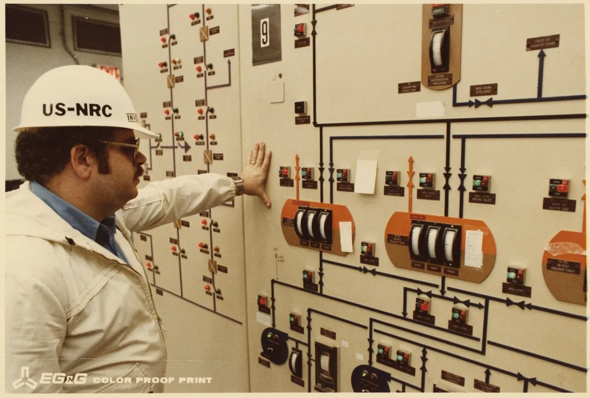
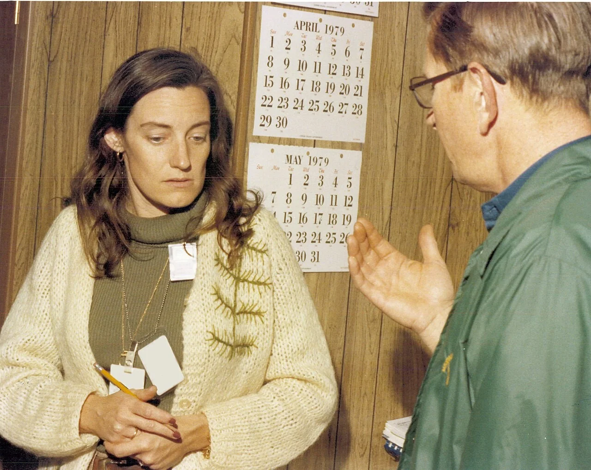

Nuclear History · 254
The 10-Mile Circle and the Inspector Next Door — How U.S. Nuclear Regulation Changed after Three Mile Island
On the day of the accident TMI had no resident inspector and no pre-drawn evacuation zone; within two years American plants had both.
When the Three Mile Island accident began on 28 March 1979, the plant had no resident federal inspector and the surrounding area had no pre-drawn evacuation zones. Within two years the United States had both: an NRC action plan, a federal emergency planning rule with 10-mile and 50-mile zones, inspectors stationed at every plant, and a new focus on the people in the control room.
A hard hat and an irony
A white hard hat with "US-NRC" stencilled across the front. On 3 April 1979, six days into the accident at Unit 2 of Three Mile Island (TMI), a U.S. Nuclear Regulatory Commission (NRC) inspector wearing it stands in the control room with his hand on a panel of meters. There is a small irony in the picture: on the morning the accident began, the plant had no NRC inspector stationed on site.
Today every American nuclear plant has federal inspectors who work there full time, and people living within about 10 miles receive emergency information every year. Where did that landscape come from?

Two empty seats on the day of the accident
The first empty seat belonged to the regulator. The NRC had launched its resident inspector programme in 1978, but TMI's resident had not yet been assigned. According to an NRC letter to the presidential commission, an inspector was scheduled for the site late in fiscal year 1979 or early in fiscal 1980. [5]
The second was a map drawn in advance. On Friday 30 March, Pennsylvania's governor advised people within 10 miles to stay indoors and pregnant women and preschool children within 5 miles to leave. Those distances were not pre-planned zones; they were numbers chosen in the middle of a crisis, on incomplete information.
Repair, not demolition
In October 1979 the presidential commission chaired by John Kemeny went as far as recommending that the five-member NRC be replaced by an agency headed by a single administrator. That recommendation was not adopted.
On 7 December 1979 President Jimmy Carter announced his response. He kept the commission but promised Congress a reorganisation plan to strengthen its chairman, who would act "as a chief executive officer". Until a new chairman from outside could be found, Commissioner John F. Ahearne would lead the agency. Carter said he was "transferring responsibility to the Federal Emergency Management Agency ... to head up all off site emergency activities", ordered a review of the emergency plans of every state with an operating reactor by June 1980, and asked agencies to "accelerate our program to place a resident Federal inspector at every reactor site". The NRC, he noted, "will pause in issuing any new licenses and construction permits", and he urged it to finish its work within six months. [1]
The detailed blueprint came from the NRC itself. Its TMI Action Plan (NUREG-0660) appeared in May 1980 and was revised in August; in November a further document (NUREG-0737) spelled out what each requirement meant in practice. [4]
![Infographic: two concentric circles drawn to scale around a small plant symbol, an inner circle of about 10 miles (16 km) labelled plume exposure pathway zone with alerting within about 15 minutes, yearly public information and exercises every two years, and an outer circle of about 50 miles (80 km) labelled ingestion pathway zone for milk, crops and water; beside them a checklist: 7 December 1979 FEMA leads off-site response, May 1980 TMI Action Plan NUREG-0660, 19 August 1980 emergency planning rule, resident inspectors at construction sites from 15 percent complete instead of 50 percent, and shift technical advisors, symptom-based procedures and simulators](../../assets/images/history/254-post-tmi-regulation/fig1-epz-checklist.webp)
Two circles drawn with a compass
The most visible change was a pair of circles on the map. The emergency planning rule, published on 19 August 1980 and in force from 3 November (10 CFR 50.47), set emergency planning zones (EPZs) around every plant: a zone of about 10 miles (16 km) radius for direct exposure to a radioactive plume, and one of about 50 miles (80 km) for managing contaminated milk, crops and water. Plants had until 1 April 1981 to comply, and the adequacy of off-site emergency planning became part of the decision to grant an operating licence. [2]
Interestingly, the 10-mile figure was not invented after TMI. It came from a joint NRC and Environmental Protection Agency report published in late 1978 (NUREG-0396). The reasoning was that for most severe accidents doses beyond 10 miles would not reach the levels at which protective action is needed, while for a larger accident detailed planning inside 10 miles would provide the base from which to expand. TMI was the event that took the report out of the drawer and turned it into a rule.
Life inside the circle changed too. Current rules require the means, such as sirens, to begin alerting the public within about 15 minutes, yearly distribution of emergency information to residents, and full-scale exercises with state and local agencies every two years. Think of the evacuation map on the back of a hotel-room door: you look at it before anything goes wrong. [3]
Regulators on site, and attention to people
Resident inspectors multiplied. Under the action plan, inspectors were also sent to plants under construction once a project was 15% complete, instead of the earlier threshold of 50%; by November 1983 there were 23 of them at construction sites alone. Today the NRC keeps at least two resident inspectors at every plant, reading control-room logs and watching tests and repairs. [4] [5]
The other pillar was people. Each shift gained a shift technical advisor with engineering training. Emergency procedures moved to a symptom-based approach: first make sure the core is covered with water, then diagnose the specific fault. Control rooms were reviewed from a human-factors standpoint, and training on full-scale simulators was strengthened; TMI's own simulator cost $18 million. Significant events had to be reported to the NRC at once, and the NRC operations centre began to run around the clock. [6] [7]
How heavy was the new rulebook?
There was a price. Plants already operating or under construction had to add equipment and change procedures, and costs and schedules grew. Some see this tightening as one cause of the gap in new U.S. reactor orders in the 1980s. Others point out that rising interest rates and slower growth in electricity demand were at work as well, and that the institutions built in these years laid the foundation for later improvements in safety and operating performance.
Whichever view one takes, one thing is clear. Before TMI, regulation was mostly about confirming that the hardware was robust. Afterwards it also meant keeping regulators on site, training the people in the control room, and rehearsing with the neighbours before anything happened.
